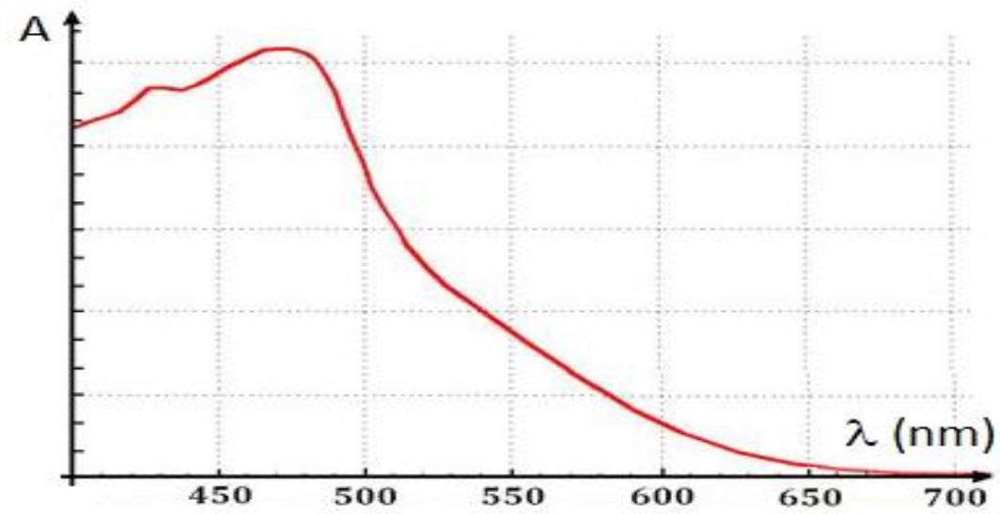

On étudie la cinétique de la réaction entre la propanone et des ions
triiodure : \[\ce{CH3COCH3(aq) + I_3-(aq)
-> CH3COCH2I(aq) + H+(aq) +2I-(aq)}\] Pour effectuer le suivi
spectrophotométrique de cette réaction, on se place à la longueur du
maximum d’absorption de l’ion triiodure .
On réalise dix mesures :
| Temps \(t (min)\) | Absorbance \(A\) |
|---|---|
| 0 | 1,89 |
| 1,0 | 1,79 |
| 2,0 | 1,68 |
| 3,0 | 1,58 |
| 4,0 | 1,48 |
| Temps \(t (min)\) | Absorbance \(A\) |
|---|---|
| 5,0 | 1,38 |
| 6,0 | 1,28 |
| 7,0 | 1,17 |
| 8,0 | 1,07 |
| 9,0 | 0,97 |

Les conditions initiales du mélange réactionnel sont 20.0 mL de
propanone, diluée dans 200.0 mL d’eau. On ajoute alors 1.0 mL de
solution aqueuse de triiodure de potassium ( ; ) de concentration \(c_0 = \SI{1,0E-2}{\mole\per\liter}\).
De cette manière, la propanone est introduite en large excès.
Proposer, en la justifiant la valeur à laquelle régler le spectrophotomètre pour réaliser le suivi.
En utilisant la loi de Beer-Lambert, exprimer la concentration en ion triiodure \([\ce{I_3-}]\) en fonction de l’absorbance \(A\) de la solution et d’une constante de proportionnalité notée \(K\).
Représenter l’évolution de \([\ce{I_3-}]\) en fonction du temps.
Calculer la vitesse volumique \(v\) de disparition des ions triiodure pour les quatre premières mesures.
Représenter l’évolution de \(v\) en fonction de \([\ce{I_3-}]\). Donner un argument permettant de dire s’il s’agit d’une réaction d’ordre 1.
On se propose de déterminer quel est l’ordre correspondant. On précise que :
Pour une réaction d’ordre 0, la vitesse volumique s’écrit \(v=k\)
Pour une réaction d’ordre 2, la vitesse volumique s’écrit \(v=k\cdot [\ce{I_3-}]^2\).
En déduire l’ordre de la réaction.
Proposer une unité cohérente pour \(k\).
En présence d’ion , à condition de travailler à température
suffisamment élevée, le 3-méthylbutan-2-ol subit uns transformation
appelée déshydratation pour former du 2-méthylbut-2-ène. À l’échelle des
entités, cette transformation peut être modélisée par le mécanisme
réactionnel suivant.
Étape 1 :
Étape 2 :
Étape 3 :
Déterminer l’équation de la réaction qui modélise la transformation.
Pour l’étape 1, justifier et situer les sites donneurs et accepteurs.
Compléter le mécanisme en faisant figurer les flèches courbes des actes élémentaires.
Identifier les deux intermédiaires réactionnels qui interviennent dans le mécanisme.
Préciser le rôle de l’ion .